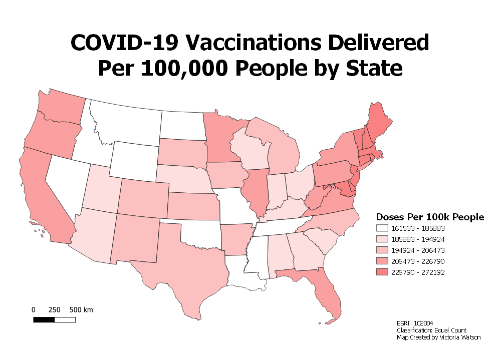

Homework 7: Choropleth
This map depicts the number of vaccinations delivered per 100,000 people. The data is organized per state. I chose this topic because of the prevalence of COVID-19 in recent years and the impact it has had on my time in college. I have been following the numbers of vaccinated people so I was interested in collecting data that I could display and vizualize about COVID-19. This data is recent and was last updated March 1, 2022.

Data used for this project
Data Source
Link to cleaned csv dataset on GitHub
Link to geoJSON on GitHub